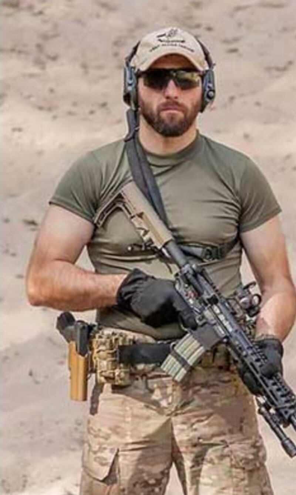
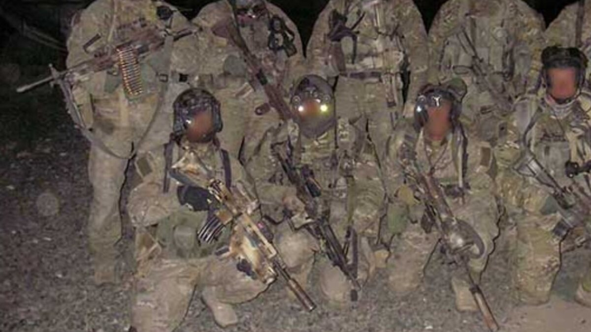

Arkadiusz „Motyl" Dembiński
Od Oddziału Bojowego GROM
do własnej firmy szkoleniowej
Nazywam się Arkadiusz Dembiński, zwany i znany również jako „Motyl". Byłem operatorem Oddziału Bojowego Jednostki Specjalnej GROM. Przez ponad 17 lat zdobywałem wiedzę i doświadczenie w zakresie procedur i taktyki działań specjalnych.
Wielokrotnie brałem udział w misjach zagranicznych, walczyłem w Afganistanie i Iraku. Uczestniczyłem między innymi w akcjach uwalniania zakładników. Podczas jednej z akcji, w trakcie wykonywania zadania bojowego zostałem poważnie ranny. Za zasługi, wzorową służbę i poświęcenie w czasie walki zostałem odznaczony przez Prezydenta Rzeczpospolitej Polskiej Krzyżem Kawalerskim Orderu Krzyża Wojskowego.
Posiadam tytuł Eksperta Krav Maga uzyskany w Izraelu. Jestem zdobywcą Pucharu Świata w kick boxingu, wielokrotnym medalistą Mistrzostw Europy i Polski. W Oddziale Bojowym GROM odpowiadałem za wyszkolenie w zakresie walki wręcz.
Obecnie prowadzę własną firmę szkoleniową.

Szkolenia i doradztwo
Przeszkolę Ciebie i Twój zespół
Wiedza z pierwszej linii — przekuta w konkretne umiejętności. Sprawdź ofertę szkoleń otwartych i zamkniętych.
Zobacz ofertę